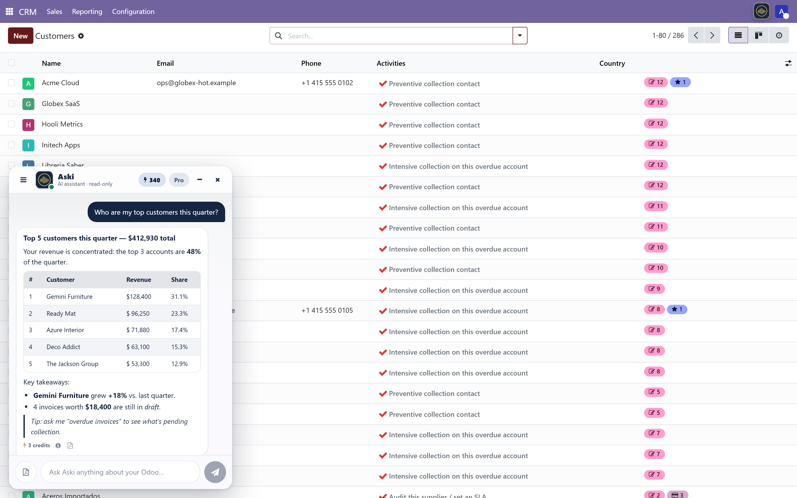
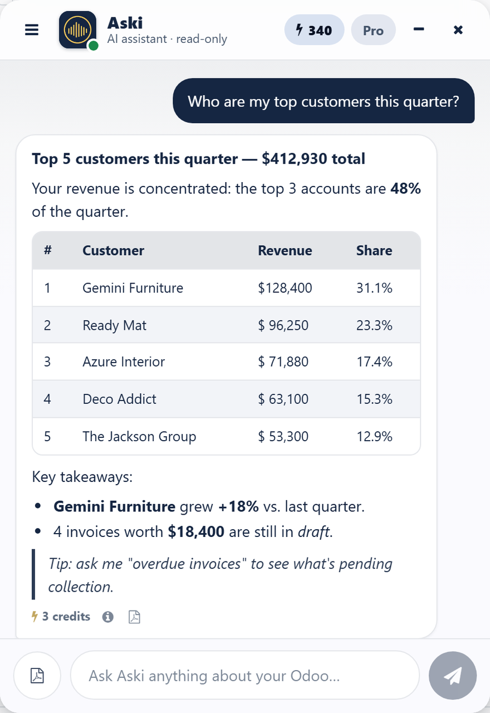
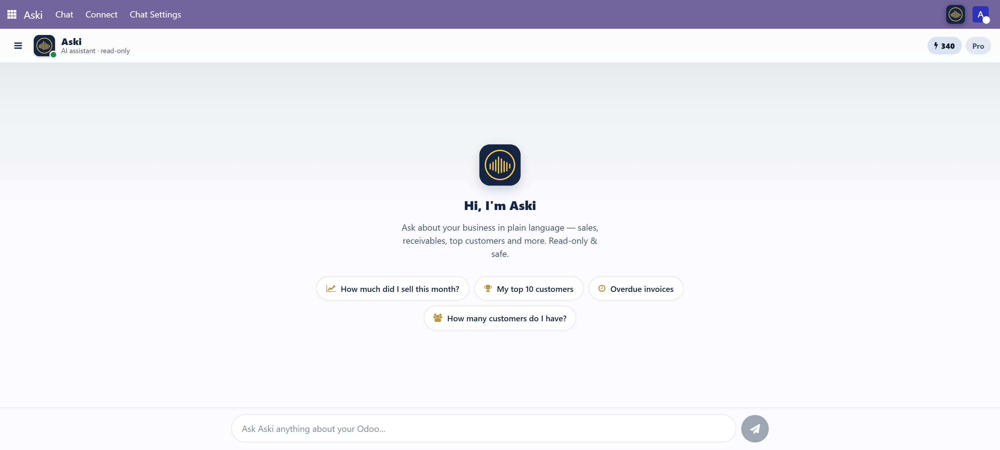

Ask your ERP in natural language
On your phone by QR, or right inside Odoo — same account, same wallet.
Aski lets you ask your Odoo questions in plain language and get real figures in seconds — sales, receivables, top products, inactive customers and more — straight from your phone, even by voice, without opening Odoo or building a single report.
This lightweight connector removes the manual setup. Install it, click Connect with Aski, and a one-time QR code is generated. Open the Aski app, scan it, and your phone is securely linked to this Odoo — no need to type URLs, databases or API keys by hand.
New: chat with Aski right inside Odoo (16+). Paste a personal access token generated once in the Aski web app, and a chat bubble appears in your Odoo top bar on every screen — no need to switch to your phone. Same account, same wallet as the mobile app.
See it in action
Aski running on your phone — chat & voice, real figures from your Odoo. Tap any screenshot to open it full size.


Odoo 16 – 19
Chat with Aski right inside Odoo
A floating chat bubble on every Odoo screen — ask in plain language, get a real answer with data tables, and export it to PDF. No switching apps, no picking up your phone.

Right where you already work — floating over any Odoo screen.

Real tables, credits used, 1-click PDF.

Nothing to learn: suggested questions get your team started on day one.
Set up once, in a minute
Paste a personal access token from the Aski web app and name the connection. No URLs, no API keys typed by hand.
Your history, kept
Separate conversation threads, just like Discuss — reload the page and pick up exactly where you left off.
One account, one wallet
Same plan and credits as the mobile app. Nothing new to buy, nothing to configure per user.
How it works
Two ways to connect — use either, or both. Same account, same wallet.
On your phone — by QR
- Open the new Aski menu → Connect.
- Click Generate connection code — a QR appears.
- In the Aski mobile app, choose Scan code and point at it.
- Done — ask your ERP from anywhere, even by voice.
Inside Odoo — the chat bubble (16+)
- Generate a personal access token in the Aski web app.
- In Odoo: Aski → Chat Settings → paste it.
- Name the connection so you can tell your instances apart.
- Done — the Aski bubble appears on every Odoo screen.
No Aski account yet? Create one at aski.dev — it takes about 2 minutes and starts with a free trial.
What you can ask
Aski is an AI assistant and chatbot for Odoo: ask your ERP in natural language and get instant answers and mobile reports — sales, receivables, top products, inactive customers, cash flow — by chat or by voice. A simpler alternative to building dashboards or BI reports for everyday questions.
Keywords: AI, AI assistant, Odoo AI, assistant, chatbot, natural language, ask Odoo, ask your data, chat with Odoo, embedded chat, in-app chat, floating chat bubble, chat widget, live chat Odoo, business intelligence, BI, ERP assistant, voice assistant, AI reports, analytics, KPI, sales report, data query, export PDF, personal access token, Claude, GPT, ChatGPT, OpenAI, Anthropic, mobile app, QR connect, no-code.
Palabras clave: IA, inteligencia artificial, asistente IA, asistente de Odoo, chatbot, lenguaje natural, pregunta a Odoo, chatea con Odoo, chat integrado, chat embebido, burbuja de chat, widget de chat, chat en vivo Odoo, inteligencia de negocios, BI, asistente ERP, asistente de voz, reportes con IA, análisis de datos, KPI, reporte de ventas, consulta de datos, exportar PDF, token de acceso personal, Claude, GPT, ChatGPT, OpenAI, Anthropic, app móvil, conectar por QR, sin código.
Read-only & safe by design
Aski only reads your data. It answers questions and builds reports — it never creates, edits or deletes records in your Odoo. Ask with confidence: nothing in your database can be changed from the app.
The module only shows you a connection code. The Aski app connects directly to your Odoo through the standard external API. The code uses a standard Odoo API key generated for your user, which you can revoke anytime in Settings > Users > Account Security > API Keys.
Works with Odoo Community and Enterprise, versions 14 to 19.
Also run SAP? Aski works with SAP too — handy if you or your business partners use both Odoo and SAP.
Get the app and learn more at aski.dev.
About the author
Jhon Jairo Rojas Ortiz
Odoo developer · custom modules, integrations & business intelligence
5+ years of hands-on Odoo experience — building and shipping real modules, integrations and analytics for companies across LATAM and Europe. Every app I publish is maintained and supported personally.
Custom Odoo modulesIntegrations & APIsBI & analyticsOdoo 14–19
inConnect on LinkedIn →